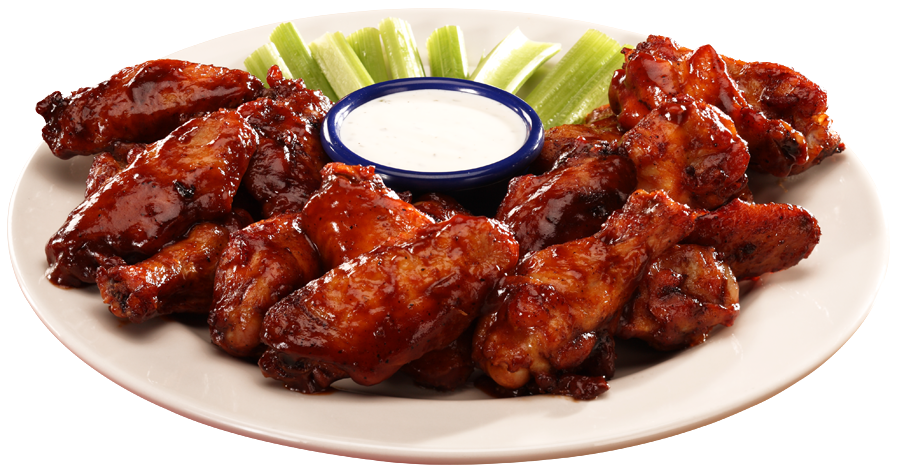
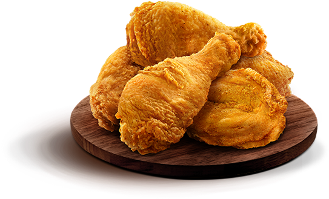

F DY
DY
GOOD FOOD,
GOOD LIFE
BURGER
A hamburger, or simply burger, is a sandwich consisting of fillings usually a patty of ground meat, typically beef-placed inside a sliced bun or bread roll.
Learn More
- 

- 
DYA hamburger, or simply burger, is a sandwich consisting of fillings usually a patty of ground meat, typically beef-placed inside a sliced bun or bread roll.
Learn More